There's something very satisfying to me about metaballs. Watching blobs merge and seperate as they float through space like the digital equivalent of a lava lamp can be hypnotic. In this post I'd like to cover a technique I've been exploring for rendering pixel-perfect metaballs in real-time. Let's start with some prerequisites...
An implicit surface is any surface that can be expressed as an implicit function in the form \(F(\mathbf{p}) = 0\), where \(\mathbf{p}\) is a vector representing a point in space. A very simple example of an implicit surface in 2D is \(x^2 + y^2 - r^2 = 0\). If you were to work out all possible values of \(x^2 + y^2 - r^2\) for every \(\mathbf{p} = (x, y)\) in space and only highlight the points that give 0, you would get a circle of radius \(r\).
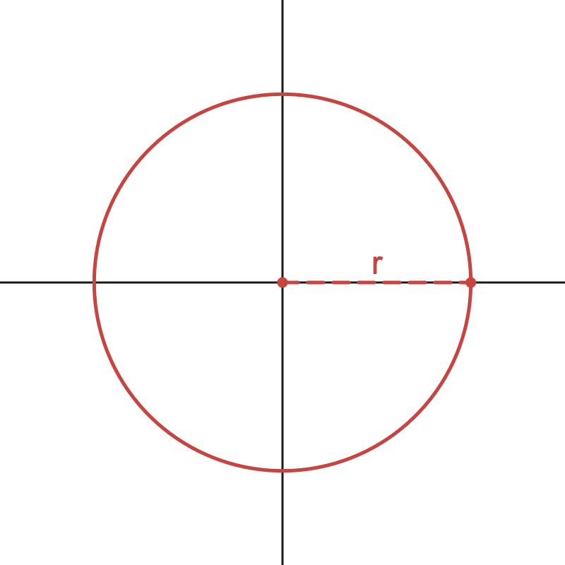
Metaballs are a type of implicit surface. Each distinct metaball at a position \(\mathbf{p}_n\) is defined by an implicit function \(F(\mathbf{p}_n)\). By summing up all of these functions and taking the set of points that equals 0 we produce the smooth, blobby surface that is characteristic of metaballs. Often we include a bias parameter \(T\) that gives us some control over the extent of the surface:
$$ F(\mathbf{p}) = \sum_{n} F(\mathbf{p}_n) - T = 0 $$
To actually render these surfaces in 3D we need to figure out whether or not a given pixel's view ray intersects with this surface. We parameterise a point \(\mathbf{p}\) along the ray in terms of the ray origin \(\mathbf{r}_o\), the ray direction \(\mathbf{r}_d\), and the distance \(t\) along the ray:
$$ \mathbf{\delta}(t) = \mathbf{r}_o + t\mathbf{r}_d $$
Plugging \(\mathbf{\delta}(t)\) into the function \(F(\mathbf{p})\) gives us a one-dimensional function with respect to the ray parameter \(t\). The surface is found at the points where this function is equal to 0, in other words it corresponds to the function's roots:
$$ F \circ \mathbf{\delta}(t) = 0 $$
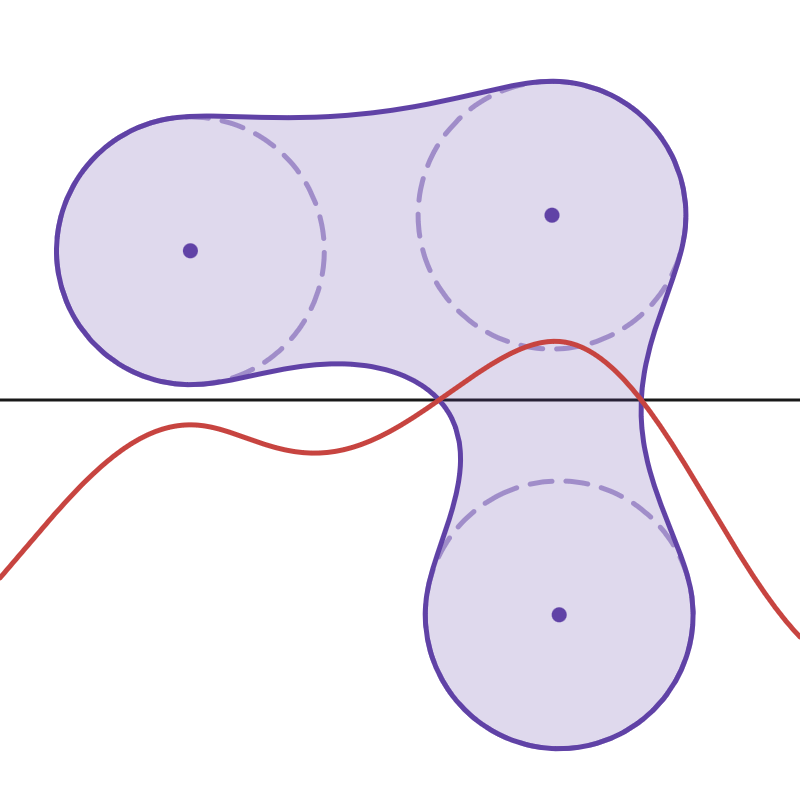
Of course if it were really that simple I'd end this post right here. Unfortunately this equation is impossible to solve analytically for anything but the simplest functions, much simpler than what we can make use with. We have to find the solution numerically, by taking a bunch of educated guesses until we converge to the answer.
Ray marching is the process of repeatedly evaluating \(F \circ \mathbf{\delta}(t)\) for increasing values of \(t\) until we hit the surface. The simplest way to do this is to march along the ray in fixed-length increments. Larger steps require less work but risk skipping over parts of the surface and producing incorrect results, while smaller steps provide more accuracy at the cost of more work.
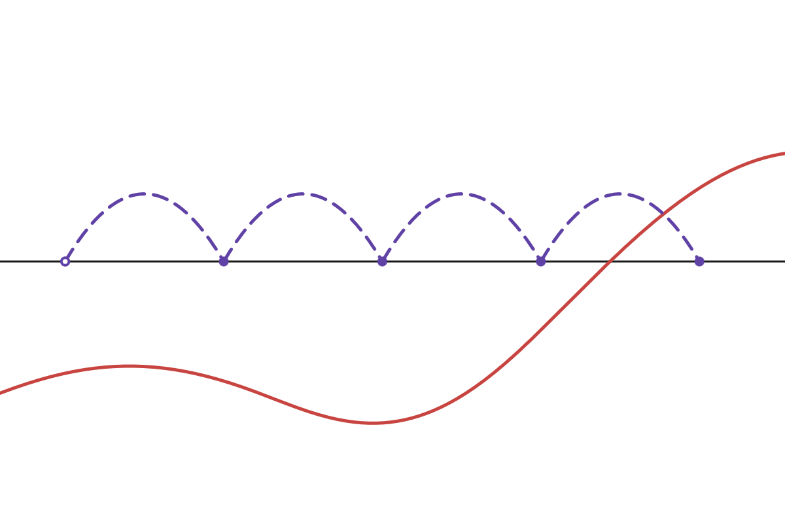
Sometimes we can analyse the function to get a better idea of how large a step we can take without overshooting the surface. This is where we can make use the property of Lipschitz continuity. The Lipschitz constant of a function \(f(x)\) is the smallest value \(\lambda\) that satisfies the following inequality for any two points \(a\) and \(b\):
$$ |f(a) - f(b)| \le \lambda |a - b| \label{lipschitz} \tag{1} $$
This says that the distance between the points at \(f(a)\) and \(f(b)\) is never greater than the distance between \(a\) and \(b\) times \(\lambda\). A nice way to visualise this is to imagine placing a double cone over the graph of \(f(x)\) with the origin anywhere on the line, such that the entire function is always contained within the cone. The slopes of the two lines forming the double cone are given by \(\pm\lambda\).
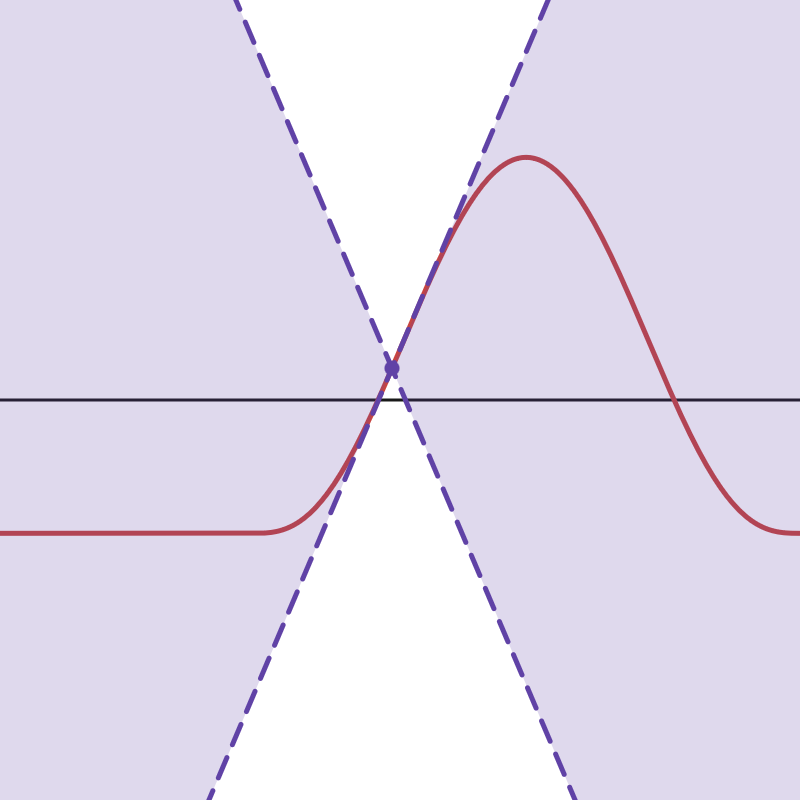
The Lipschitz constant of a function coincides with the value of its steepest slope, or more formally the maximum absolute value of its first derivative:
$$ \lambda = \max(|f'(x)|) $$
This gives us a guarantee on the largest step we can take without overshooting the surface. Moving forward we define \(f(t) = F \circ \mathbf{\delta}(t)\). Let \(x_0\) be any root of \(f(t)\) such that \(f (x_0) = 0\), corresponding to the surface. We can then write out equation (\(\ref{lipschitz}\)) as:
$$ |f(t)| \le \lambda |x_0 - t| $$
By dividing through by \(\lambda\) we get:
$$ \dfrac{|f(t)|}{\lambda} \le |x_0 - t| $$
In other words the absolute value of \(\dfrac{f(t)}{\lambda}\) will give us a step size that is always less than or equal to the distance to the surface. Evaluating this value at every step along the ray can accelerate ray marching considerably. This is effectively a form of sphere tracing.
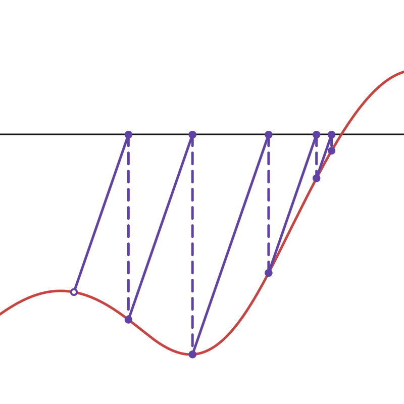
For a sum of functions like our metaballs equation, we can add the Lipschitz constants of each individual function to get an upper bound on the constant.
$$ \lambda_a + \lambda_b \ge \lambda_{a + b} $$
Using the Lipschitz constant to get a conservative step size is equivalent to finding the intersection between the ray and the enclosing cone mentioned earlier. For a point \(t\) along the ray, the two lines that make up the cone can be described by a pair of equations \(f^{+}\) and \(f^{-}\):
$$ \begin{aligned} f^{+}(x) = f(t) + \lambda (x - t) \\ f^{-}(x) = f(t) - \lambda (x - t) \end{aligned} $$
These are sometimes referred to as inclusion functions of \(f(t)\).1 The intersection is found by setting either \(f^{+}\) or \(f^{-}\) equal to \(0\) and solving for the root:
$$ \begin{aligned} f(t) \pm \lambda (x - t) &= 0 \\ \pm \lambda (x - t) &= -f(t) \\ x - t &= \pm\dfrac{f(t)}{\lambda} \end{aligned} $$
Yielding the familiar term \(\dfrac{f(t)}{\lambda}\) corresponding to the step size. Looking at the problem this way suggests that we can do this for other types of inclusion functions as well. For example, we can define an asymmetric bounding cone where the upper and lower lines have different slopes. Let \(\lambda^{+}\) and \(\lambda^{-}\) be the maximum and minimum values of the derivative of \(f(t)\), respectively. Then:
$$ \begin{aligned} f^{+}(x) &= f(t) + \lambda^{+} (x - t) \\ f^{-}(x) &= f(t) + \lambda^{-} (x - t) \end{aligned} $$
Where:
$$ \begin{aligned} \lambda^{+} = \max(f'(t)) \\ \lambda^{-} = \min(f'(t)) \end{aligned} $$
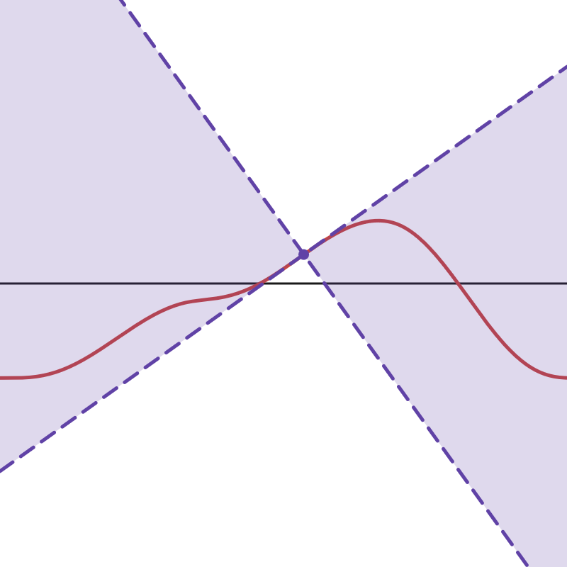
Note this is very similar to a first-order Taylor expansion, except that we are using a bounded derivative instead of the derivative at the current point. We can extend this to a second-order Taylor expansion, where we replace our bounding lines with bounding parabolas whose roots are still relatively simple to solve for. If we let \(\gamma^{\pm}\) be the minimum and maximum values of the second derivative of \(f(t)\) then:
$$ \begin{aligned} f^{+}(x) &= f(t) + f'(t)(x - t) + \dfrac{\gamma^{+}}{2}(x - t)^2 \\ f^{-}(x) &= f(t) + f'(t)(x - t) + \dfrac{\gamma^{-}}{2}(x - t)^2 \end{aligned} $$
Where:$$ \begin{aligned} \gamma^{+} = \max(f''(t)) \\ \gamma^{-} = \min(f''(t)) \end{aligned} $$
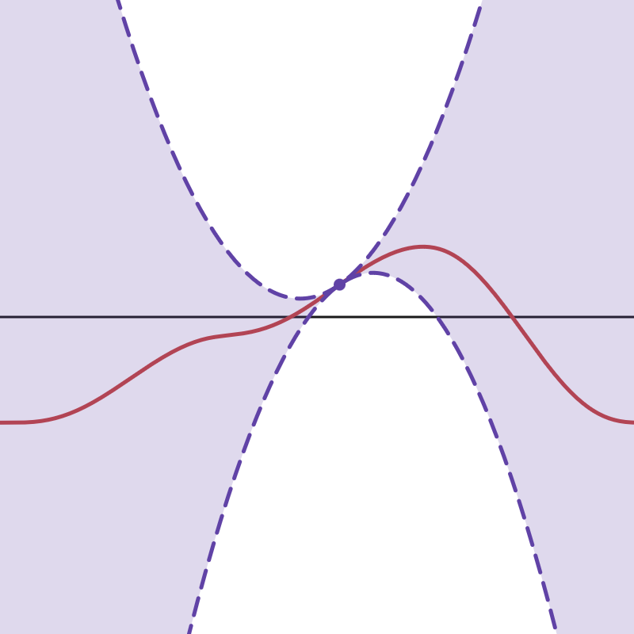
Now finding the roots at \(f^{\pm}(x) = 0\) involves solving a quadratic equation, which we can do using the quadratic formula. The roots of the bounding parabolas can be expressed like so:
$$ x = \dfrac{-b \pm \sqrt{b^2 - 2ac}}{a} $$
Where:
$$ a = \gamma^{\pm} \quad b = f'(t) \quad c = f(t) $$
Sometimes a quadratic inclusion function can actually suggest a worse root than a linear inclusion function. This is because the gradient of the bounding parabola is always either monotonically increasing or decreasing, so it's possible for it to exceed the bounds of the original function. The solution is to use a piecewise inclusion function: where the gradient of the parabola exceeds the first-order Lipschitz constant, extend this point with the linear inclusion function. This is sometimes referred to as an improved quadratic inclusion function.2
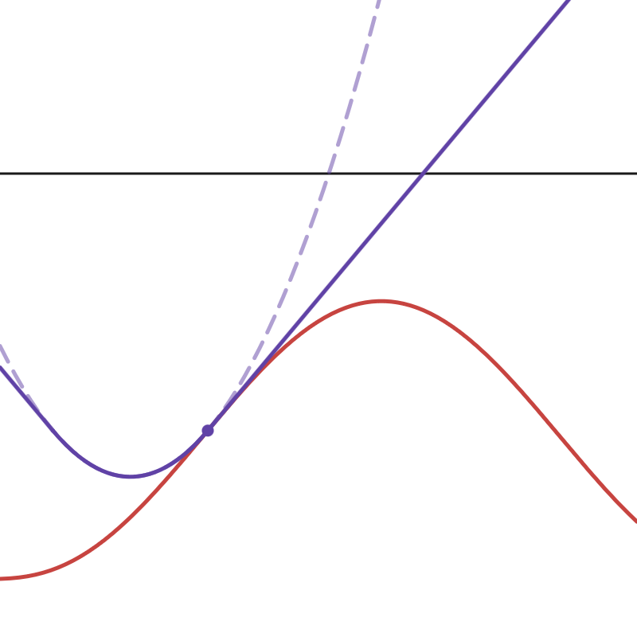
The inclusion functions we've looked at so far will give us a global bound on the step size anywhere on the ray. However, if we restrict the area of interest to a smaller portion of the ray we are likely to get an even tighter bound. This is the idea behind segment tracing.3 Given a point on the ray \(t\) and an initial step size \(\epsilon\), segment tracing finds the inclusion function along the segment bounded by \([t, t + \epsilon]\).
$$ \begin{aligned} \lambda^{+} = \max(f'(x)) \quad x \in [t, t + \epsilon] \\ \lambda^{-} = \min(f'(x)) \quad x \in [t, t + \epsilon] \end{aligned} $$
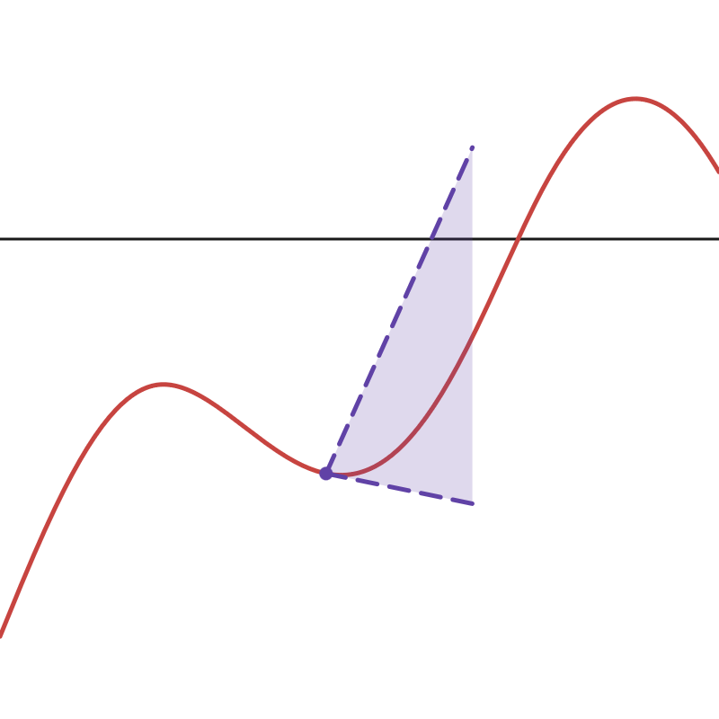 |
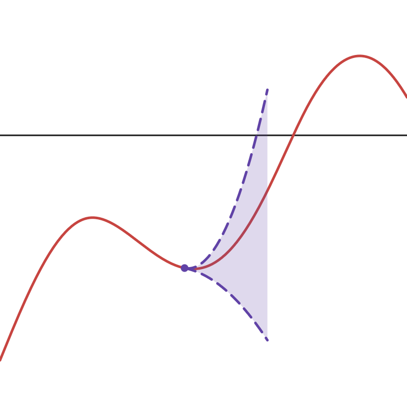 |
We then march along the ray by the safe step size \(t_{step}\) given by the local inclusion function, or by \(\epsilon\) if \(t_{step} > \epsilon\). Each iteration we choose a new \(\epsilon\) based on the size of the previous step multiplied by some factor \(\kappa\) in an attempt to make a larger step.
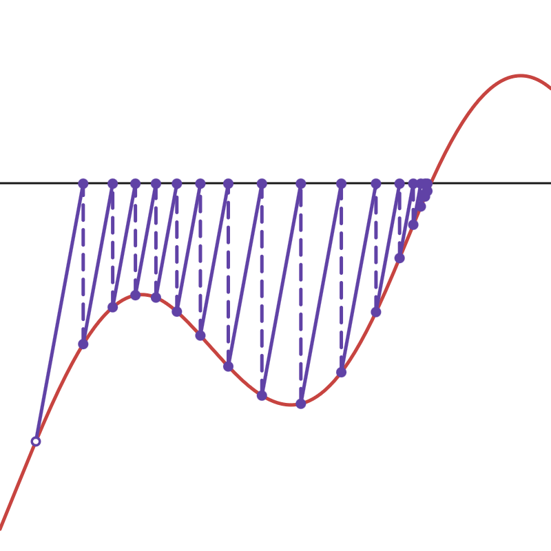 |
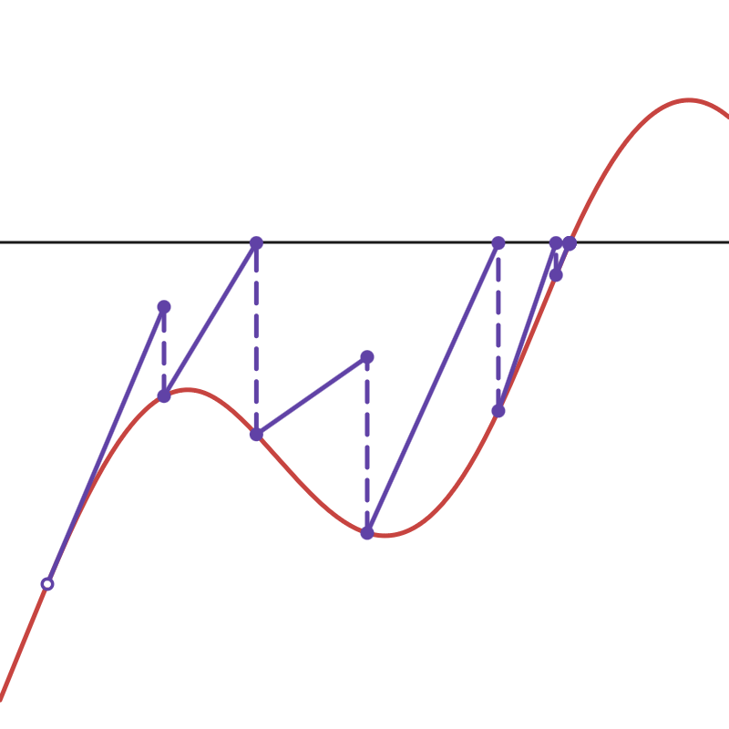 |
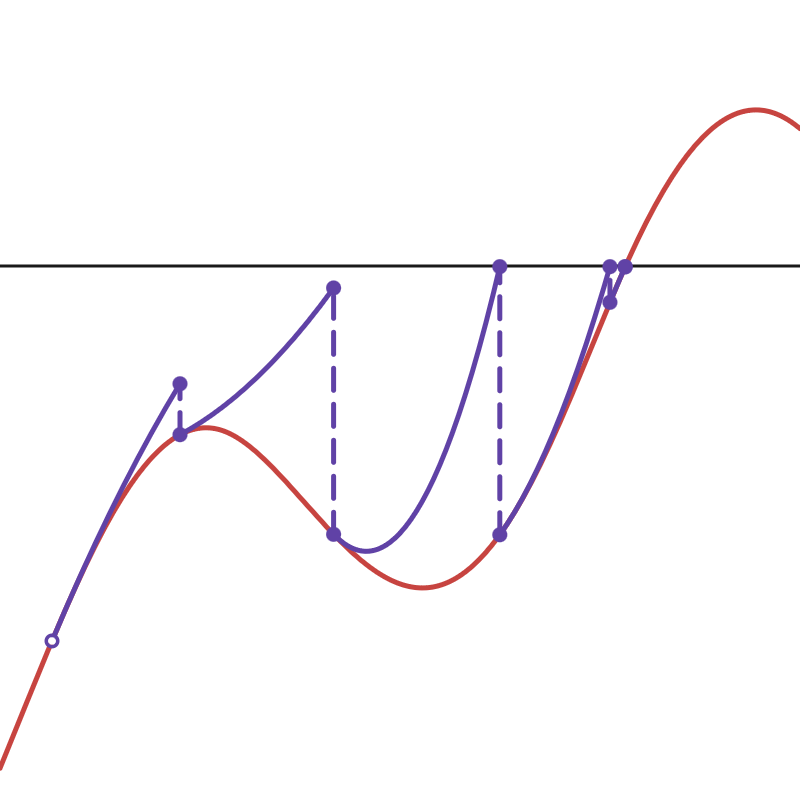 |
For segment tracing to work we need to know where the minima and maxima of the first (and potentially second) derivatives of the function lie along the ray. This can be found analytically if we choose our metaball function carefully. The following function permits a straightforward derivation in addition to being \(C^2\) continuous and having finite support:
$$ F(\mathbf{p}) = (1-|\mathbf{p}|^2)^3 \quad -1 \le x \le 1 $$
Let's say we want to find \(\lambda^{\pm}\) for a segment \(x \in [t_0, t_1]\) along the ray. If we plot the derivative of \(F \circ \mathbf{\delta}(t)\), we see that it's an odd function with exactly one minimum and one maximum:
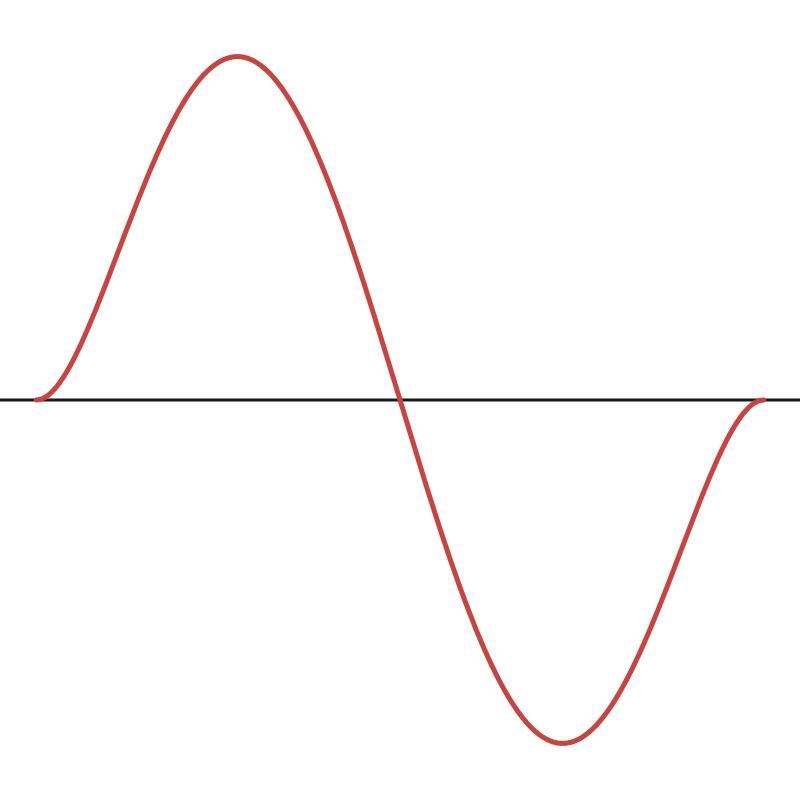
To find \(f(t) = F \circ \mathbf{\delta}(t)\) we'll plug in the ray equation:
$$ \begin{aligned} F \circ \mathbf{\delta}(t) &= F(\mathbf{r}_o + t\mathbf{r}_d) \\ &= (1-|\mathbf{r}_o + t\mathbf{r}_d|^2)^3 \\ &= (1 - at^2 - 2bt - c)^3 \end{aligned} $$
Where:
$$ a = \mathbf{r}_d \cdot \mathbf{r}_d \quad b = \mathbf{r}_d \cdot \mathbf{r}_o \quad c = \mathbf{r}_o \cdot \mathbf{r}_o $$
Note that a linear transformation can be applied to \(r_o\) and \(r_d\) to account for scaling and translation of each metaball. This is subsumed by the \(a\), \(b\) and \(c\) coefficients so it does not change the following derivation. To simplify things moving forward let \(u = 1 - at^2 - 2bt - c\) so that our metaball function along the ray is just \(u^3\). Using the chain rule we can determine that the first derivative is:
$$ f'(t) = -6u^2 (at + b) $$
The extrema of \(f'(t)\) can be found by analysing the roots of the second derivative:
$$ f''(t) = 6u[-au + 4(at + b)^2] $$
The roots are found where either \(u = 0\) or \(-au + 4(at + b^2) = 0\), where the former case occurs at the edges of metaball function. Looking at the graph we know that this is not where the extrema lie, so we want to solve the latter case which reduces to the following:
$$ \begin{aligned} x_0^{-} &= \dfrac{-5b + \sqrt{5} \sqrt{b^2 - ac + a}}{5a} \\ x_0^{+} &= \dfrac{-5b - \sqrt{5} \sqrt{b^2 - ac + a}}{5a} \end{aligned} $$
Where \(x_0^{-}\) and \(x_0^{+}\) are the locations of the minimum and maximum, respectively. To find the local extremum \(\lambda^{\pm}\) within a segment we need to look at where the end points \([t_0, t_1]\) lie in relation to \(x_0^{\pm}\). If \(x_0^{\pm}\) lies between the end points, then the extremum is equal to \(f(x_0^{\pm})\). Otherwise, it is the largest or smallest of \(f(t_0)\) and \(f(t_1)\):
$$ \begin{equation} \lambda^{+} = \begin{cases} f'(x_0^{+}) & \text{if}\ x_0^{+} \in [t_0, t_1] \\ \max(f'(t_0), f'(t_1)) & \text{otherwise} \end{cases} \end{equation} $$ $$ \begin{equation} \lambda^{-} = \begin{cases} f'(x_0^{-}) & \text{if}\ x_0^{-} \in [t_0, t_1] \\ \min(f'(t_0), f'(t_1)) & \text{otherwise} \end{cases} \end{equation} $$
To find the second-order Lipschitz constants \(\gamma^{\pm}\) we must determine the roots of the third derivative of \(u^3\):
$$ f'''(t) = -24(at + b)[2(at + b)^2 - 3au] $$
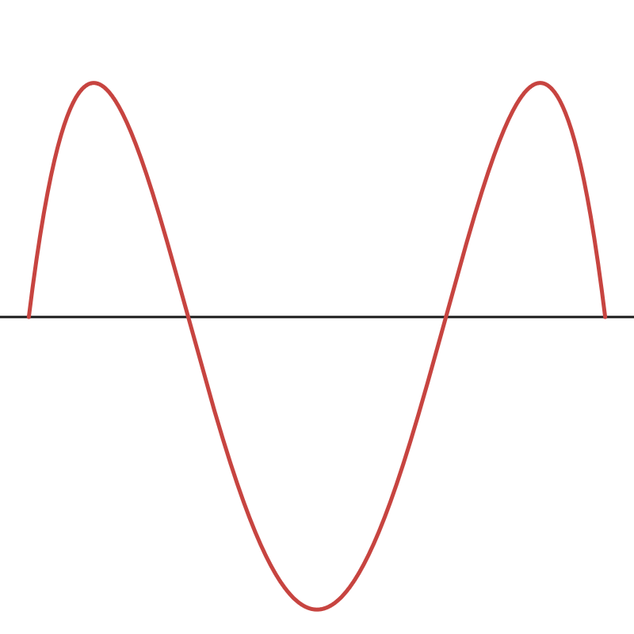
The linear factor \(at + b = 0\) produces one root, while the quadratic factor \(2(at + b)^2 - 3au = 0\) produces two. If we look at a graph of the second derivative we see that this corresponds to one minimum and two maxima, respectively. Their locations are given by the following equations:
$$ x_0^{-} = -\dfrac{b}{a} \quad x_0^{+} = \dfrac{-5b \pm \sqrt{15} \sqrt{b^2 - ac + a}}{5a} $$
So \(\gamma^{\pm}\) can be defined as follows:
$$ \begin{equation} \gamma^{+} = \begin{cases} f''(x_0^{+}) & \text{if}\ x_0^{+} \in [t_0, t_1] \\ \max(f''(t_0), f''(t_1)) & \text{otherwise} \end{cases} \end{equation} $$ $$ \begin{equation} \gamma^{-} = \begin{cases} f''(x_0^{-}) & \text{if}\ x_0^{-} \in [t_0, t_1] \\ \min(f''(t_0), f''(t_1)) & \text{otherwise} \end{cases} \end{equation} $$
This approach can be implemented in a single compute shader pass, provided that we already have a GPU-resident buffer of metaballs for the current frame available to us. The screen is split up into tiles for each workgroup where the number of threads is equal to the number of pixels in a tile, \(16 \times 16\) in this case. Each screen space tile projects an oblique square frustum in world space whose intersection with each metaball's bounding sphere tells us whether or not that metaball contributes to the isosurface.
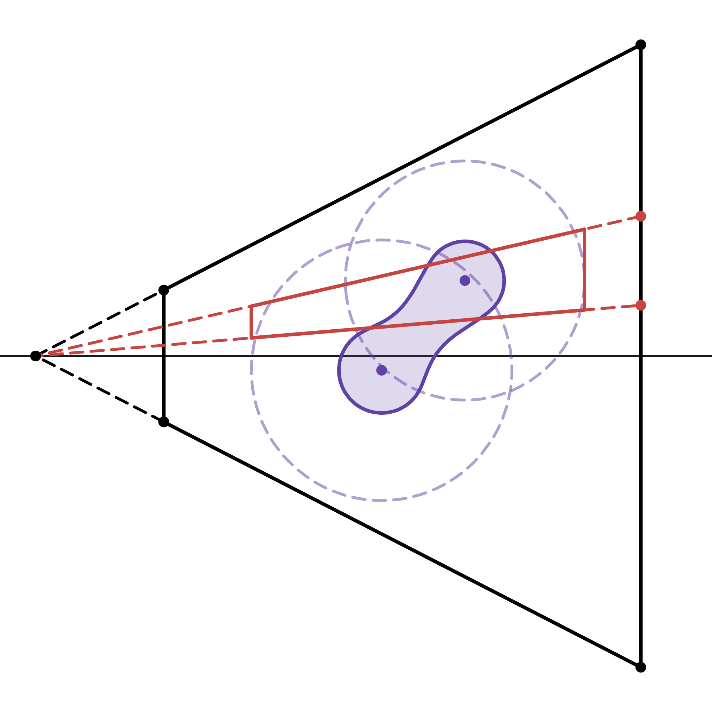
Using an atomic counter, each thread tests one metaball at a time such that \(16 \times 16 = 256\) metaballs can be tested in parallel. Metaballs that intersect the tile are stored in a group shared array, and we keep track of the minimum and maximum depths of all metaballs to give us an approximate bounds in which to segment trace. Without compression metaballs can be represented by a position, radius, and colour, totalling \(32\) bytes in size, meaning we can fit \(512\) metaballs per tile in shared memory for a reasonable cost of \(16\)kb.
struct Metaball
{
float3 position;
float radius;
float3 colour;
};
groupshared Metaball groupMetaballs[512];
One optimisation we can make at this point is to implement a coarse occlusion culling pass. Every metaball has a minimum bounding sphere that represents the location of the isosurface if no other metaball were to contribute to its influence. The minimum bounds \(r_{min}\) can be easily derived from the metaball function itself:
$$ r_{min} = \sqrt{1 - T^{1/3}} $$
We test the intersection of the each pixel's view ray with the minimum bounding sphere for each metaball, yielding the maximum possible depth of the location of the isosurface. The furthest of these gives us a coarse bound for the maximum depth of the whole tile. We then perform the initial culling pass again, ignoring metaballs that lie behind the maximum depth plane.
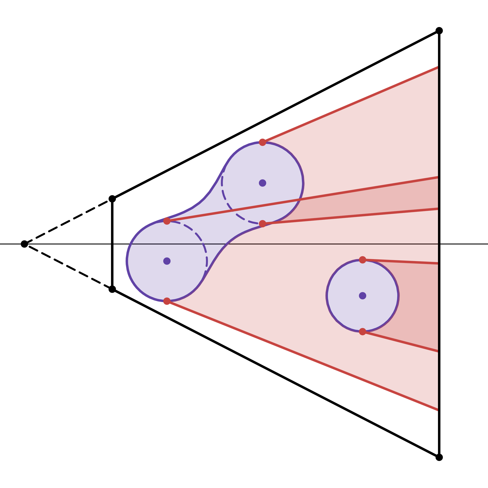
Finally, each thread performs segment tracing on a single pixel and the result is composited into the final render.
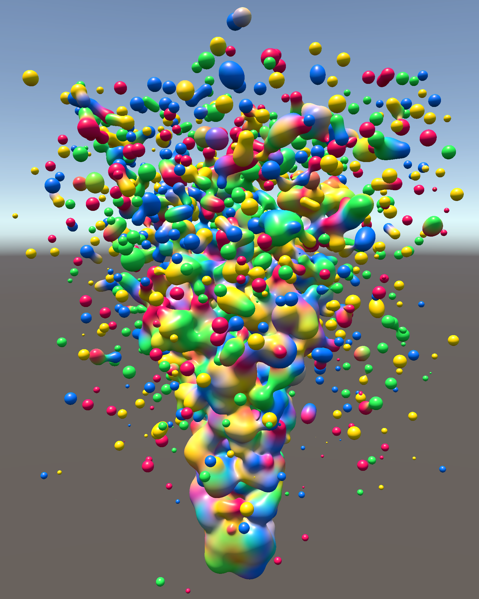
Below is a table showing the average time taken to render a given number of metaballs on an Apple M1 Max. The maximum number of ray steps was capped to \(256\) for all benchmarks, although only sphere tracing ever hit this limit.
| # Metaballs | Sphere Tracing | Linear Segment Tracing | Quadratic Segment Tracing | |
|---|---|---|---|---|
| Standard | Improved | |||
| 128 | 2.1ms | 0.5ms | 0.6ms | 0.7ms |
| 256 | 4.3ms | 0.8ms | 1.1ms | 1.3ms |
| 512 | 8.4ms | 1.6ms | 2.2ms | 2.4ms |
| 1024 | 16.4ms | 2.9ms | 3.9ms | 4.4ms |
| 2048 | 29.3ms | 4.8ms | 6.3ms | 7.1ms |
| 4096 | 44.9ms | 7.4ms | 9.6ms | 10.8ms |
Below is a comparison of the number of segment tracing iterations required to reach the isosurface, capped to a maximum of \(32\) steps.
| Linear Segment Tracing | Quadratic Segment Tracing | |
|---|---|---|
| Standard | Improved | |
|
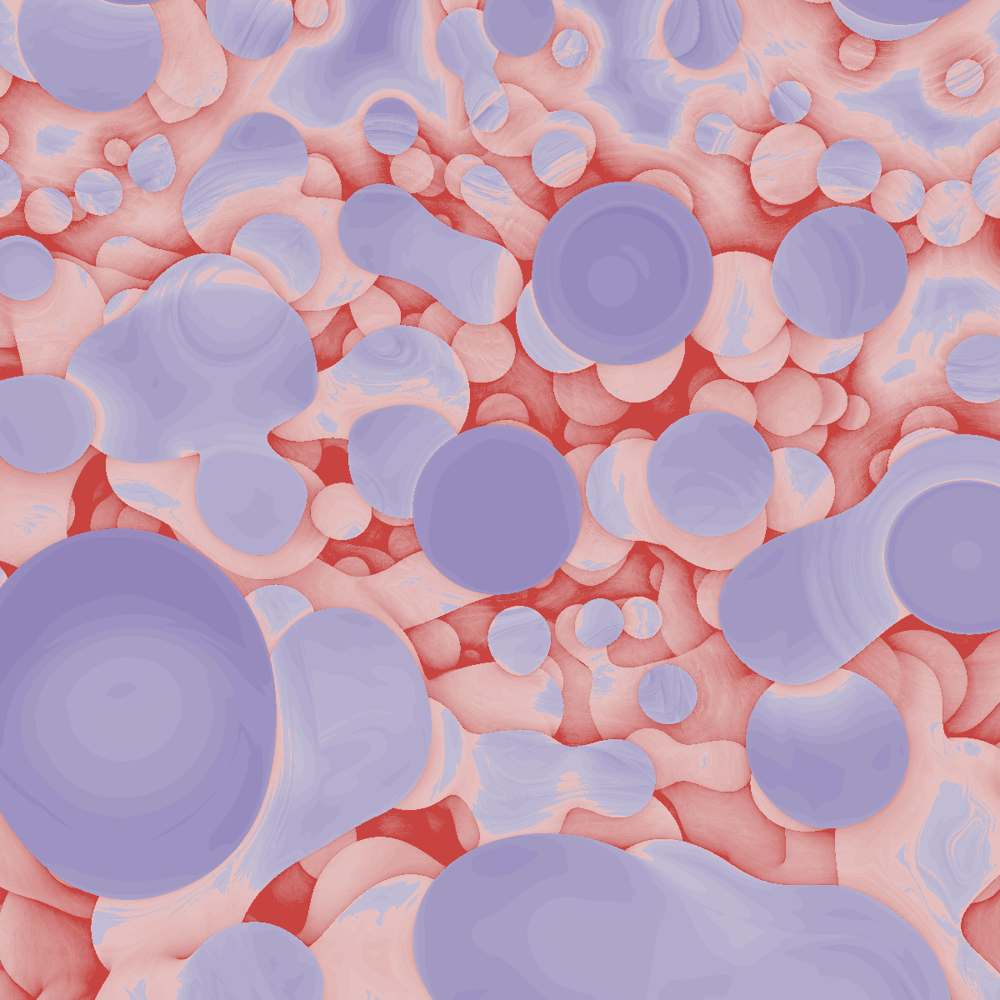 |
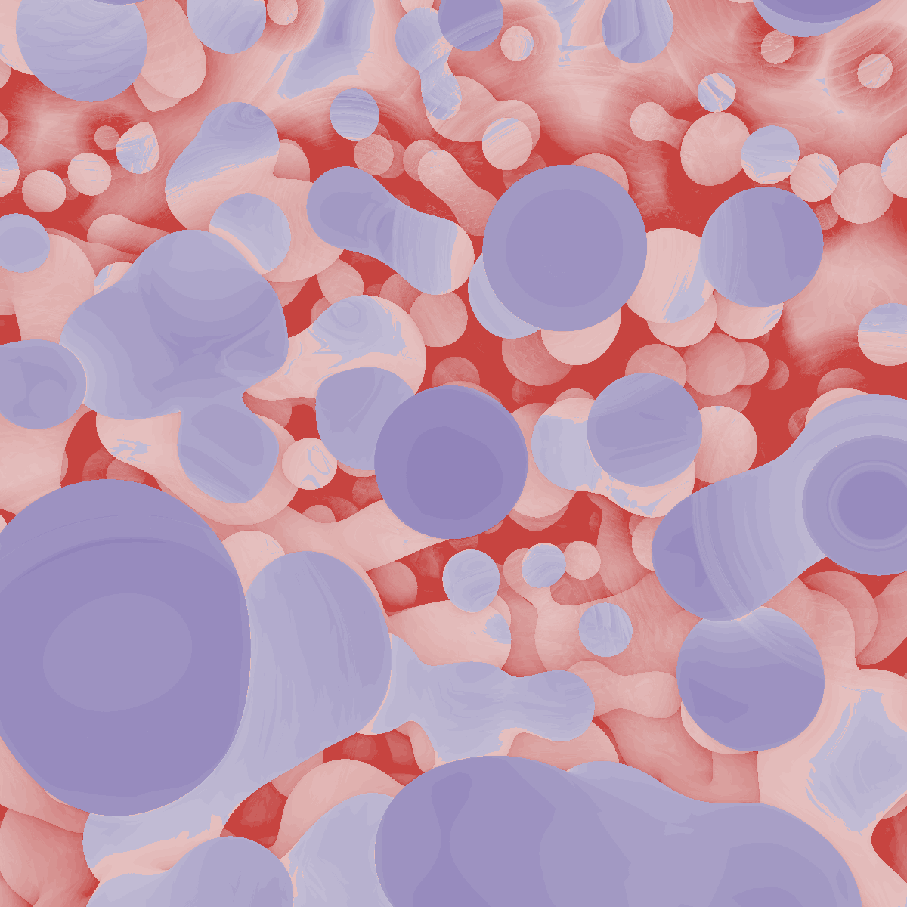 |
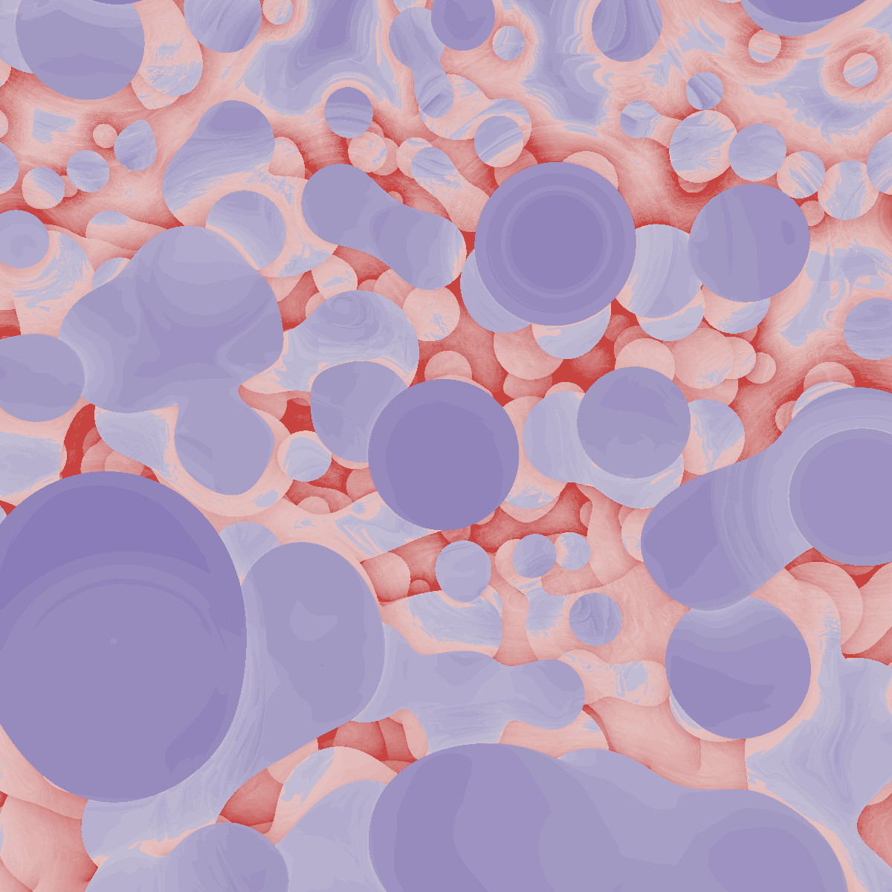 |
We can see that in some cases standard quadratic segment tracing actually requires more steps to reach the isosurface. Also, even though the improved quadratic method generally takes fewer steps than linear segment tracing, the latter still wins out in terms of performance. This is likely because the relatively small reduction in step count fails to compensate for the added computational complexity of each step.
Ultimately I think this stands as a neat curiosity with maybe some practical applications for very niche use-cases. Given that decent performance is dependent on having a relatively low number of metaballs, I wouldn't expect this to be very useful for things like rendering complex fluid simulations.
One thing I didn't explore was simplification through level-of-detail adjustments. Perhaps after a certain distance close groups of metaballs could be approximated by a single, larger metaball. Another idea is to revert to a simplified two-dimensional renderer for small or distant groups of metaballs, which would just entail 'splatting' metaball contributions instead of a full ray trace.